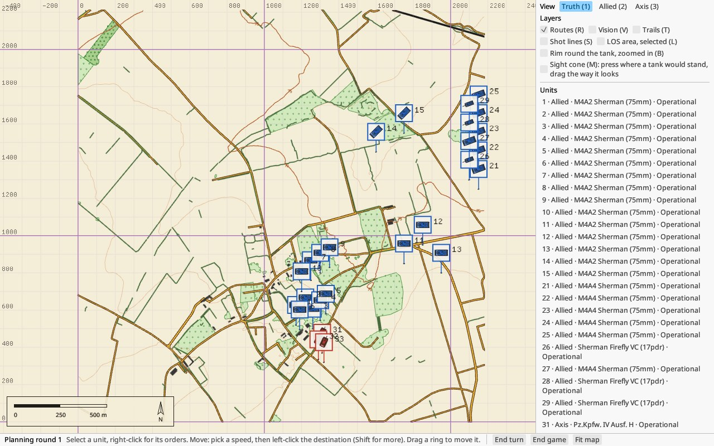
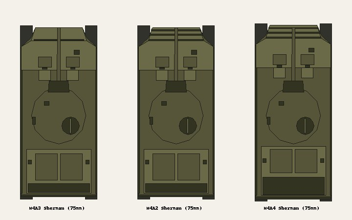
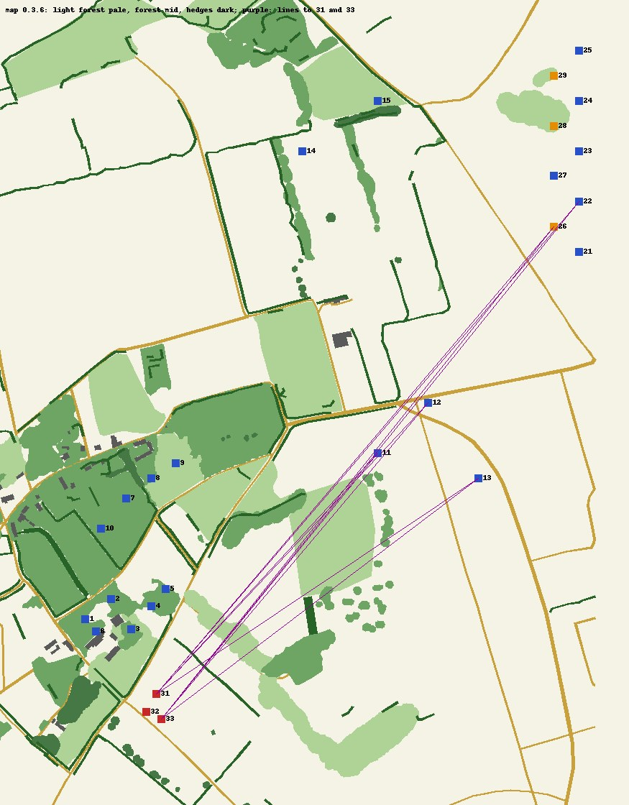
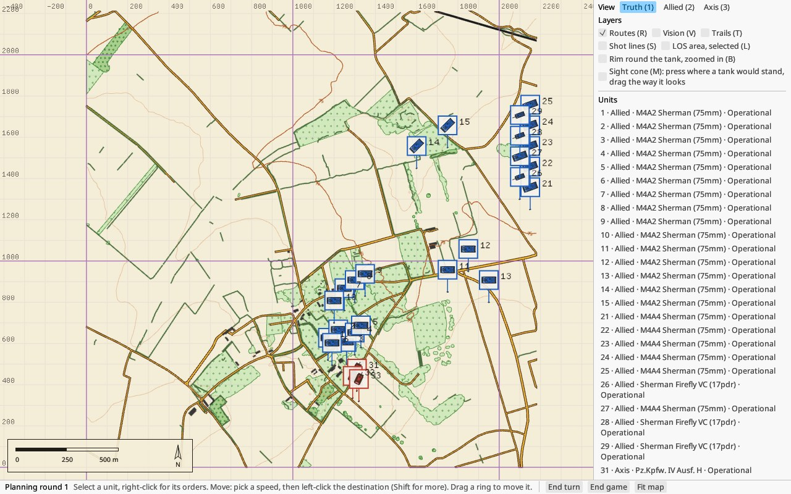

H2: Le Mesnil-Patry, the second time
On 11 June 1944 three Panzer IV of the 12th SS, led by Hans Siegel, came up behind a hedge at the south-east corner of Le Mesnil-Patry and set four or five Shermans of the 1st Hussars on fire within a minute. H1, the first try (engine 0.37.0), lost 2.55 Shermans a run against the source's seven or eight. H2 asked the same question on the Globb engine with the tanks the sources give. This page is what we found. We did not turn any screw in the engine or in the vehicles to bring the result closer to the history: every change below comes from a source, and the engine's rules are the same for both sides.
What the sources say
The 1st Hussars' war diary for June 1944 is on Library and Archives Canada's microfilm T-12657, scanned by Canadiana; it was read by optical character recognition, upside down on the film. With Steel Chariots' account of the battle and a trooper's own report, it gives the day as the Canadians saw it.
Our tank was a Sherman 4A2 diesel with armour plating on some of the ammo racks.Trooper A.O. Dodds, B Squadron, account of 11 June 1944, filed with the war diary's June appendices; DHH 141.4A 6013 (D3)
This information was passed on to our Bde who in turn ordered our men not to fire on them as they were friendly tanks. They ordered MAJOR AD'A MARKS "C" Sqn to hold his fire and fly his recognition flags.War diary, 6th Canadian Armoured Regiment (1st Hussars), 11 Jun 44, LAC T-12657 image 155 (read by OCR, "They" corrected)
The enemy was still obscured by a hedge. When the hedge ended abruptly and the lead panzer fortuitously found himself among our infantry, several Shermans could be seen in dangerous proximity...Enemy tanks on the left at 9 o'clock - 200 - engage!....Within a good minute four or five Shermans were on fire.Untersturmführer Jeran, 8 Company, as quoted in Steel Chariots, Le Mesnil-Patry part III-A (losthistory.net)
After destroying six tanks in the orchard, Siegel continued on to the edge of the orchard followed by counter-attacking pioneers. He engaged two more Shermans at a range of 1,200 metres stopping both.Steel Chariots, Le Mesnil-Patry part III-A (losthistory.net)
In this action Tpr A. CHAPMAN gunner in a Firefly knocked out FIVE PANTHERS with five shots, a record up to the present for the Regt.War diary, 8 Jun 44, LAC T-12657 image 153 (read by OCR; Chapman was in Lieutenant Henry's tank of C Squadron)
What we built from them
The Canadians are Canadian units. B Squadron's 15 placed tanks are M4A2s (Sherman III), a vehicle file of its own read from the M4A2's technical manual, TM 9-731B of January 1943. C Squadron's nine are Sherman Vs with one Firefly per troop, three, which matches the three 17-pounders among the day's losses. No Jagdpanzer IV: SS-Panzerjäger-Abteilung 12 was first in action on 19 July. The places, crews and Siegel's orders are H1's.
Swept over 80 seeds, the first H2 lost 1.31 Shermans a run, and H1 on the same engine 1.06. Siegel's three tanks were out in about ten seconds, having fired five rounds between them.


Why Siegel died in seconds
Counting who knocked out the Panzer IVs gave the answer: three tanks in the wheat at about 800 m and C Squadron at about 1,200 m, together almost every kill, from the first second. In the source it went the other way round: Siegel hidden behind the hedge, the orchard first at 200 and 100 m, C Squadron last, when he drove north into the wheat and showed his side.
Rather than change the engine, we checked the scenario against the sources, and found three things it lacked:
1. C Squadron held its fire. Brigade took Siegel's tanks for friendly ones and ordered C Squadron to fly its recognition flags; only later did the commanding officer give it leave to fire. The engine got an order for this, hold fire for so many seconds, and C Squadron holds for 120 s (the diary gives no time; "a couple of minutes" is our choice).
2. Siegel came along the hedges. His first leg now runs up the lane between two hedges to the orchard's southern edge, where the hedge ends, instead of across the open towards the wheat.
3. The map lacked the copses. "The ground was open except for copses", as an interview quoted by the historian Terry Copp has it; the copses and tree rows were drawn into the map in the map editor (map 0.3.6). They gave Siegel's tanks about 40 s of life instead of 10.


The numbers
Each variant is 80 runs on map 0.3.6, the same seeds, the engine and the vehicles unchanged between them. A run ends when one side has nothing left.
| Variant | Shermans out, mean | Runs with 6 or more | Siegel's tanks knocked out by |
|---|---|---|---|
| H1 light | 0.61 | 0 of 80 | C Squadron 141, the wheat 93, the orchard 4 |
| H2 | 0.85 | 0 of 80 | C Squadron 137, the wheat 99, the orchard 2 |
| H2, C Squadron holds fire 120 s | 3.29 | 22 of 80 | the wheat 155, C Squadron 67, the orchard 11 |
| H2, holds fire, Siegel along the hedges | 3.30 | 11 of 80 | the wheat 148, C Squadron 46, the orchard 37 |
| The source | about 8 |
What it means
On the map, 24 Shermans against three Panzer IV, with the ground and the flank on the Canadian side, should win at almost no cost if every Canadian crew sees Siegel and knows him for an enemy. The engine does just that. The day went otherwise because of things the map does not show: a squadron that took the enemy for friends, a squadron busy with infantry in the wheat, and Siegel coming out of a hedge among them.
With the order from the war diary, Siegel's route from the source and the copses on the map, the day's result comes in 11 of 80 runs, one in seven, through the same course as in the sources: the orchard fights, C Squadron waits. The mean is 3.3 Shermans against the source's seven or eight, and part of that gap is what the engine does not have: infantry, anti-tank guns and Panzerfausts, which took much of B Squadron that afternoon.
What is still open
Mistaking a tank for a friend is in the scenario as an order, not in the engine: telling what an enemy is stays parked. The crews' attention, busy with infantry, is not modelled. How long C Squadron held its fire is not in the diary. Which of B Squadron's tanks were troops and which headquarters is not known, nor the marks troop by troop. 68 of the M4A2's values are still copied from the Sherman V.
The items behind it
H2's scenario: the 1st Hussars as the war diary has themSherman III (M4A2, 75 mm, diesel): a vehicle file of its ownA hold-fire order: the crew watches but does not fire, for so many secondsWhich Sherman marks the 1st Hussars had on 11 June, per squadronThe 1st Hussars' Fireflies on 11 June, and Sergeant Boyle's tankH2 without a Jagdpanzer IV at Le Mesnil-Patry